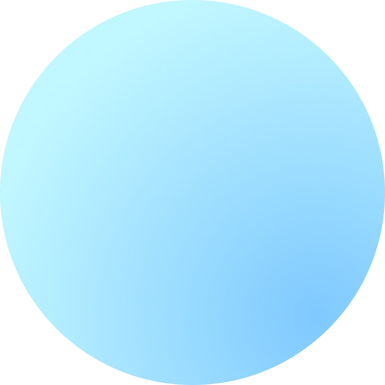
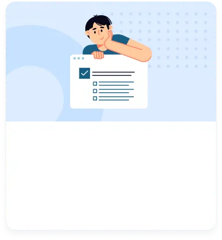
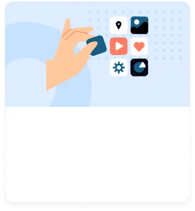
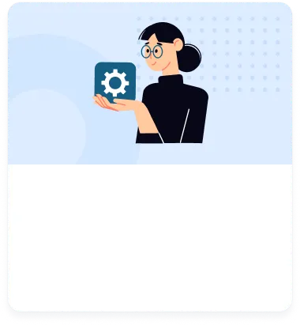
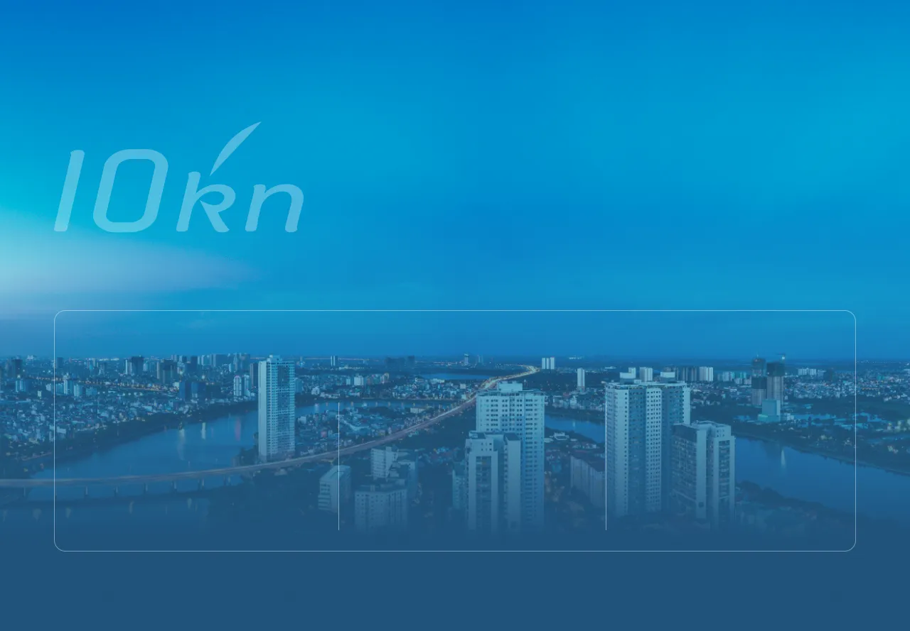
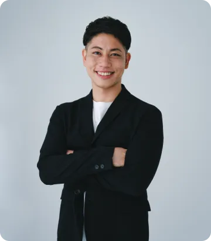
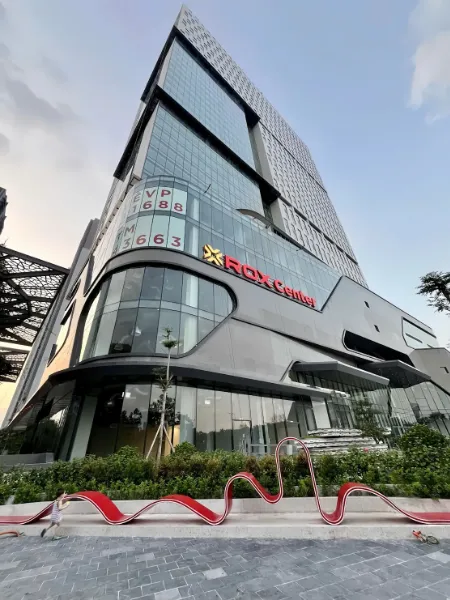

Comfortable
Speed
あなたのビジネスを快適な
スピードで実現します。


ここ数年、日本においてエンジニアの数は増えきた一方、エンジニアによって技術力の格差が激しいので、
お客様のご要望を実現するための技術力が伴った人材を確保することが非常に困難となってきました。
テンノットは、 ITへの投資や人材育成が盛んに行われているベトナムを拠点としているため、高い開発スキルを有した優秀なエンジニアを数多く揃えております。
また、お客様に寄り添う、迅速かつ的確なコミュニケーションを強みとしておりますので、低価格で高品質のシステム開発を実現いたします。

お客様の新規事業・DXを最先端技術で実現いたします。スクラッチ開発、リニューアル、保守開発、フロントエンドのみなど柔軟に対応いたします。

iOS/Androidのスマホ・タブレットアプリを開発いたします。ネイティブアプリとクロスプラットフォームアプリどちらも豊富な開発経験があります。

IoT開発、業務システム、組み込みシステム、様々な開発実績があります。開発体制も臨機応変に対応可能です。
お客様のニーズ・ご希望に合わせた開発体制の構築が可能です。
テンノットでは、スムーズにプロジェクトを進めるために、
お客様と最適な方法を探すよう日々努めております。
また、ツールや、使用言語も最先端のものを取り入れております。
なんでもお気軽にご相談ください。

今後、日本においてIT人材を確保することがどんどん困難になることが予想されます。
テクノロジーの進化と世界の変化が加速度的に進んでいく世の中で、人材不足により日本が大きな機会損失をしてしまうことを防ぎ、日本・ベトナム社会に貢献することを目指しています。そのために10kn(テンノット)は、ベトナムのアウトソーシングにおける心理的・実務的障壁を極限まで取り除き、まるで日本人に仕事を依頼しているのと同じような感覚で仕事ができる世界を実現します。

2013年から5年間、株式会社ワークスアプリケーションズにて会計システムの開発に従事。 インド子会社との共同開発を通して、ブリッジエンジニアとしてインド現地でも勤務。インターナショナルコミュニケーション力とマネジメント力を身に付ける。2018年より、フリーランスのエンジニアとして、数多くのプロジェクト立ち上げに従事。開発からマネジメント、採用まで幅広く担当し、自社サービス開発事業ではCTOを務める。2022 年ベトナム・ハノイに渡り、10KN COMPANY LIMITEDを設立、代表に就任。
リーダーシップ、プロダクト開発における優先順位の整理、プロダクトのゼロベースの開発、ダイバーシティを持つチームのマネジメントを得意とする。一致団結して成果を最大化することに多大なやりがいを感じる。
